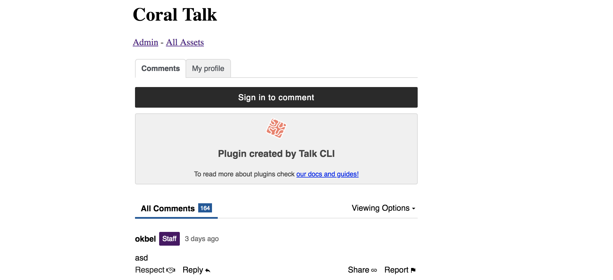

Creating a Basic Pride Reaction Plugin¶
In this tutorial, we will build a basic reaction plugin.
What is a plugin?¶
Talk has two parts - the first is core. Our core code includes all commenting and moderation features that are necessary for a comment section, and ones that we believe are important to be universal. This code can be found in our Talk repo.
The other part is plugins. Plugins are additional functionality which are optional to use with Talk. You can turn these on or off, depending on your specific needs. Plugins are either part of our core plugins, which ship with Talk, or they are developed by 3rd parties and either used privately and internally, or are open sourced for use across the greater community.
Reactions¶
Talk exposes a friendly API to create new reactions. To explore the capabilities of Talk we are going to create a new reaction together step-by-step.
In Talk, there are currently three ways commenters can react to comments: Like, Love, and Respect. These reactions are separated into plugins so that you can customize which reactions you want to use by toggling them on or off - or by adding your own custom reactions, which is what we are going to do today.
We can create a new plugin from scratch or we can use the Talk CLI to generate a plugin template for us to use. CLI stands for Command Line Interface, meaning can access utilities via the command line that make it easy to interact and integrate with Talk.
Please note this tutorial assumes you have already installed and configured Talk locally.
Creating a new plugin using the Talk CLI¶
- Open your terminal
- Go to the Talk folder
- Enter
./bin/cli-pluginsin the command line

You will see 3 options: create, list and reconcile
create: This is what we use to create new plugins. It will display a wizard and ask us a couple of questions in order to understand how we want to build our plugin.list: Shows a list of all plugins.reconcile: Reconciles local plugins and downloads their external dependencies.
In order to create our new plugin, enter this: ./bin/cli-plugins create.
The CLI will now ask us 4 questions:

Explaining the questions of the cli-plugins create¶
- This is where you will submit the name of your plugin; our usual naming convention is
talk-plugin-, so we will entertalk-plugin-pridefor ours. - Does this plugin extend the capabilities of the server? If your plugin needs to extend the schema of the database, or interact with route or services you will say
yes. In this case, we will need to store the user’s comment reaction, so we will sayyes - Does this plugin extend the capabilities of the client? If your plugin adds visual content to Talk, you will say
yes. In this case we need to add a button with which the users can react to the comments, so we will again putyes. - Should we add it to plugins.json? Choosing yes will activate our plugin instantly. Select
yesin this case.
So now a plugin has been created inside our local /plugins folder. We can see our plugin here now, listed as talk-plugin-pride.
The structure of our plugin¶
This is the structure of our plugin. Let’s see what each piece does.

index.jsThe index file contains everything we export to the server. In this case, we see only one thing:module.exports = {}. This means we are currently not exporting anything to the server - but we will do this later./clientTheclientfolder contains all the necessary files to extend the client.index.jsIn this file we will describe how we are going to extend our client. It is generally useful to indicate where the plugin will be embedded. In our case we want to put it in each comment. Later we will see how to do this. It also serves to add functionality such as how to usereducersandtranslations..eslintrc.jsonThese are the ESLint rules. By default they are the ones that Talk uses.translations.ymlThis file is not mandatory but we can use it to add translations of the copy that is shown to users./componentsThese are the components. By default we will find the generated fileMyPluginComponent.jsand its CSS styles inModulesMyPluginComponent.css
Now let’s run our Talk instance. We can see the plugin was generated and we can see it in our embed:

It is important to note that Talk does not dictate the architecture of the plugins. But for reasons of performance and consistency it is important that we follow certain basic guidelines.
To create components you must be familiar with React. If you’re not, I recommend the official guides, especially Components and Props - React.
It’s important to note that the files that were generated by default with the plugin creator can be deleted or reused. Whatever your preference!
Now that we know what all of our plugin files do, let’s create our plugin :sunglasses:
Building our plugin¶
The first thing we should think about is what our plugin consists of and what experience we want to offer. We know that we want there to be a button, that it can be clicked, and that it creates a reaction in the comment. So let’s build it.
Since our button is a component let’s create a new file inside that folder. Let’s call this PrideButton.js.
The minimum expression of our button looks like this:
import React from 'react';
class PrideButton extends React.Component {
render() {
return <button>Pride!</button>;
}
}
export default PrideButton;
Alright, we have our button. So now we want to tell it where to show - in this case, we want it under every comment. To do this we are going to make use of slots. Slots are small places inside Talk where we can place plugins. We already have a slot in Talk where we can place reactions. This slot is called commentReactions.
To add it there, we will go to client/index.js and add the following lines:
import PrideButton from './components/PrideButton';
export default {
slots: {
commentReactions: [PrideButton],
},
};
You will notice that we deleted the slot object MyPluginComponent. This is because we don’t want to show the little example code that the CLI generated for us. We can also delete any files we won’t us, or we can just leave them but not export them; if they’re not exported, they won’t be added to the Talk bundle.js.
Now, if we go to Talk we will see that our PrideButton is now there on each comment - now it’s time to tell the button what to do.

Adding functionality with the Talk API¶
Talk exposes a series of tools that plugins can use. In this case we can use withReaction. withReaction is a HOC (High Order Component) that adds functionality to our components.
We will use it like so:
import React from 'react';
import { withReaction } from 'plugin-api/beta/client/hocs';
class PrideButton extends React.Component {
render() {
return <button>Pride!</button>;
}
}
export default withReaction('pride')(PrideButton);
The first parameter we passed to withReactions is the name of the reaction. In our case, we will use ‘pride’. We must be consistent with this since this will impact storing our data later.
In our next step, let’s make clicking our button either generate a reaction or remove the reaction, in case they have already acted on the comment with the same reaction.
import React from 'react';
import { withReaction } from 'plugin-api/beta/client/hocs';
class PrideButton extends React.Component {
handleClick = () => {
const { postReaction, deleteReaction, alreadyReacted } = this.props;
if (alreadyReacted) {
deleteReaction();
} else {
postReaction();
}
};
render() {
return <button onClick={this.handleClick}>Pride!</button>;
}
}
export default withReaction('pride')(PrideButton);
withReactions makes the component receive postReaction, deleteReaction and alreadyReacted:
postReaction: Posts the reaction to the serveddeleteReaction: Removes the reactionalreadyReacted: Lets us know if a user has already reaction to the commentcount: Tells us the number of times that users have reacted to the comment
Now, our frontend functionality is complete, but for all this to work, we still need to add something else to our index.js in our main plugin folder. This time we want to extend the server.
const { getReactionConfig } = require('../../plugin-api/beta/server');
module.exports = getReactionConfig('pride');
getReactionConfig adds the necessary functionality on the server side.
Now our plugin works! People can react to comments with pride!
We don’t want to stop quite yet though - let’s improve how our button looks visually - and also we aren’t checking if a user has already reacted to the comment or not. Let’s change that.
Adding CSS¶
We are going to create a PrideButton.css inside of the folder components. Let’s make our button noticable and bright:
.reacted {
background: red;
}
.button {
background: wheat
}
And we will add the the use case if someone has already reacted:
import React from 'react';
import styles from './PrideButton.css';
import { withReaction } from 'plugin-api/beta/client/hocs';
class PrideButton extends React.Component {
handleClick = () => {
const { postReaction, deleteReaction, alreadyReacted } = this.props;
if (alreadyReacted) {
deleteReaction();
} else {
postReaction();
}
};
render() {
const { alreadyReacted, count } = this.props;
return (
<button
className={alreadyReacted ? styles.reacted : styles.button}
onClick={this.handleClick}
>
Orgullo!
{count > 0 && count}
</button>
);
}
}
export default withReaction('pride')(PrideButton);
And that’s it! You’ve created your first reaction button! 🌈
If you would like to continue to the next part of our Plugin Tutorial, see Customizing Plugins with Coral UI in the left sidebar.